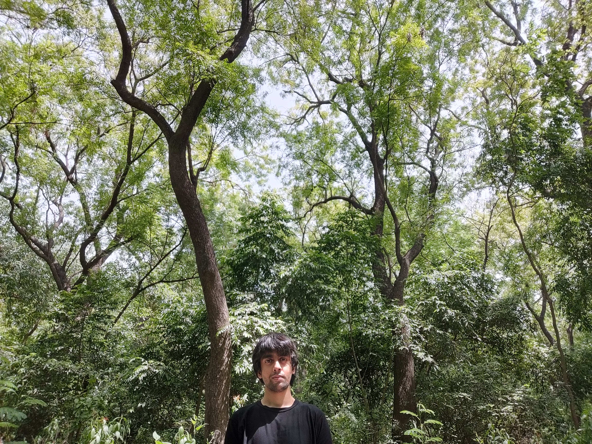

a teetering bulb of alienated dread and utopian dream of the conquest of bread not a postmodern meme of confusion and fear awkward and sincere earnest and unironic not detached or sardonic -----------------------
 Most modern bureaucracies identify me with the name Pulkit Manocha. But more often, I'm called Pulkit.intro
Sometimes I'm here: looking at books on Goodreads And sometimes here: spamming my flippant thoughts And sometimes here: rereading Kropotkin's appeal to the young And sometimes here: tracking music on Last.fm And sometimes here: maintaining a running thread of captivating images And sometimes here: taking notes to improve my culinary library And sometimes here: playing chess And sometimes away..
Photo: * the great indian [?] perched on a wire * heady angles in blue * granite in red, black and yellow * Delhi is trashy sometimes * post rain textures * dead mall diving Text: * Short story: 3 * Rubinia y musica [headphones please] * 10 minute writeup: 2 * 10 minute writeup: 1 * New year's eve and banality * Notes on Das Kapital (Vol 1) Part IV: Production of Relative Surplus Value * Notes on Das Kapital (Vol 1) Part III: The Production of Absolute Surplus-Value * Notes on Das Kapital (Vol 1) Part II: The Transformation of Money into Capital * Notes on Das Kapital (Vol 1) Part I: Commodities and Money * Review of two novels - On rural indian tragedy * An argument mental health, individualism, capitalist realism * Paglia on foucault (introduced by yours truly in a rant) * Record of a casual chat with a friend over banal politics * Some notes on theses on feuerbach and marx from when i was 19 * Some notes on "technological somnambulism" by langdon winner from when I was 19 * A poem: I like fiction * godard's Sauve Qui Peut (la vie) (1980) * speech against a museum to culver city govt 24/09/2019 Sound: [Please use headphones] * mixing alva noto and me pt.1 * Delhi is trashy sometimes * Oh no! The free in free market isn't quite as free! * strings, a cuckoo and some other birds in c major * experiments with bass and obese pluck on spaceship when sick * wind, rain and birds. mix. * a baby's indulgences on the keyboard of a spaceship. * and another on what may or may not be music Video: * Junkyard rickshaw * the calm of a city cow in the blistering summer heat * Arendt on Love * Hi duckling! Bye duckling! * Brownian Birds * Brownian Fleas * Invisible fireworks at champa gali * Obligatory cat II * Obligatory cat Contact: * pulkit12083 [at] iiitd [dot] ac [dot] in * pmanocha [at] usc [dot] edu * LinkedIn Patents Github
[No cookies, No data theft, no privacy intrusions - This website does not secretly commodify you for profit :) ]

Sharing and distribution of all materials on this website falls under the Creative Commons License: Attribution-NonCommercial-ShareAlike 4.0 International (CC BY-NC-SA 4.0)
goodbye everyone. this me exists no more.